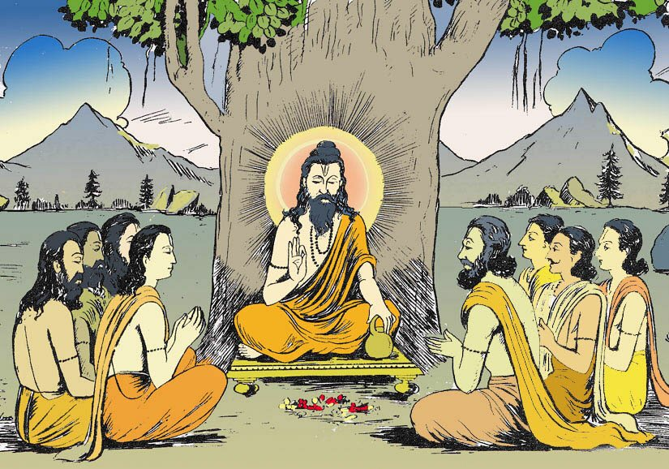
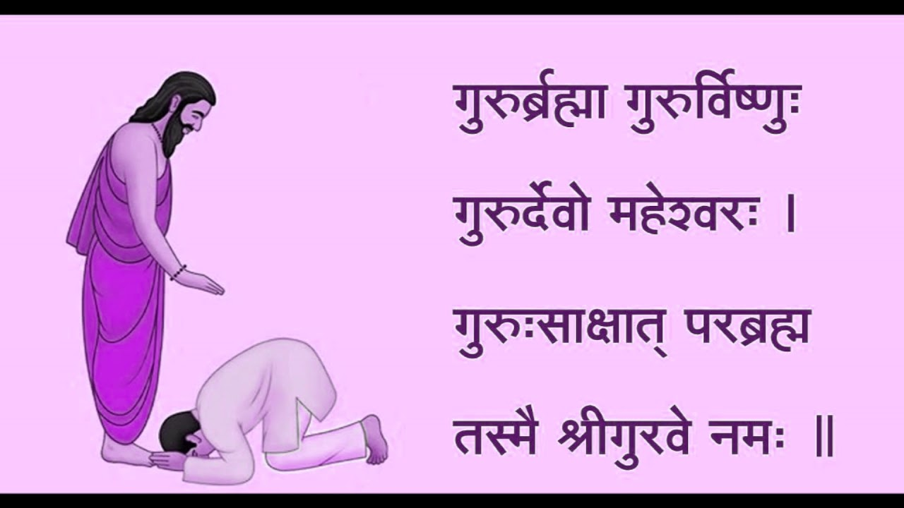
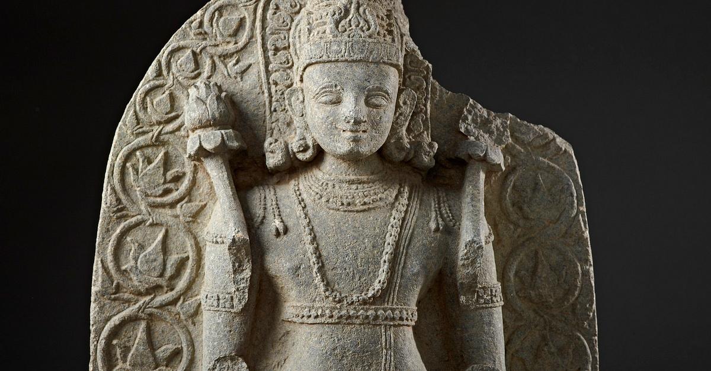
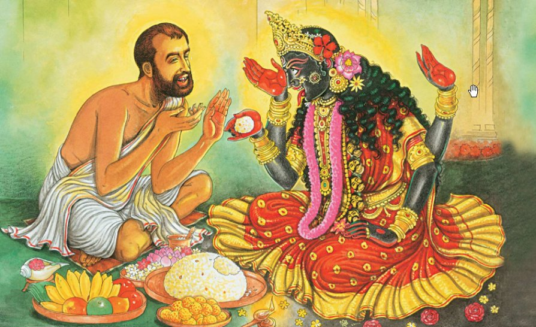
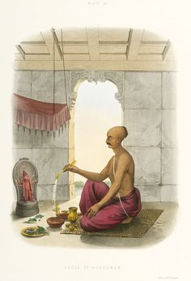
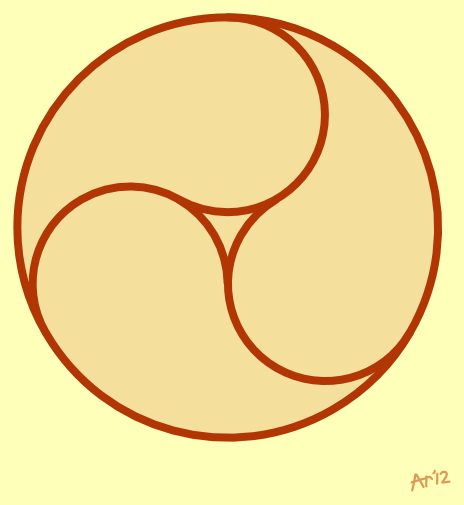
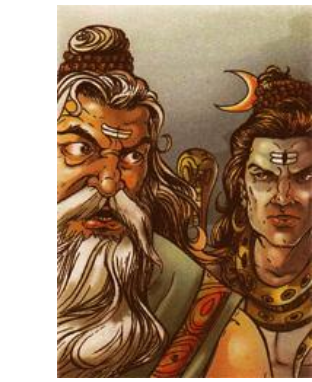
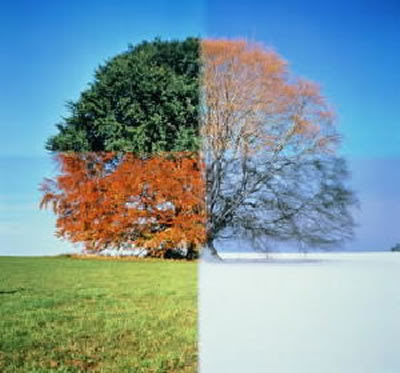
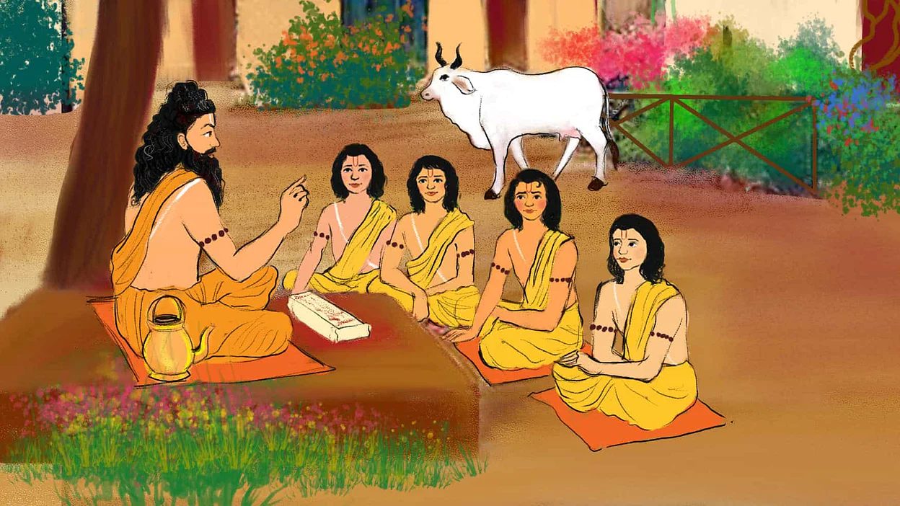
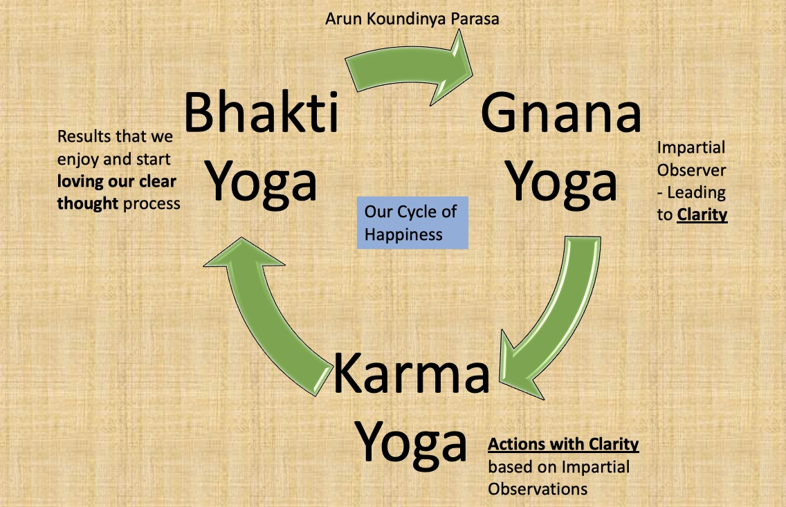

Extended Learnings on Indian Culture
A long walk through Rishis, Gurus, Gunas and the three Yogas — my personal comprehension of Sanātana Dharma, plus a glossary of its key ideas.
Series · Completed
Extended Learnings on Indian Culture
A long walk through Rishis, Gurus, Gunas and the three Yogas — my personal comprehension of Sanātana Dharma, plus a glossary of its key ideas.
My Learnings On Indian Culture
The Comprehension of Indian Culture has lost in the personalities of the gods we created and the corresponding norms which were picked from our vedas.

Extended Learnings -101 | Indian Culture | Why Rishis had to move to mountains???
Why Rishis had to move to mountains??? Part 101 of Extended Learnings, my series on Indian culture, the Bhagavad Gita and Sanātana Dharma.
Extended Learnings -102 | Indian Culture | Did Rishis created reproducible research?
Did Rishis created reproducible research? Part 102 of Extended Learnings, my series on Indian culture, the Bhagavad Gita and Sanātana Dharma.
Extended Learnings -103 | Indian Culture | How Rishis became Gurus!!!
How Rishis became Gurus!!! Part 103 of Extended Learnings, my series on Indian culture, the Bhagavad Gita and Sanātana Dharma.

Extended Learnings -104 | Indian Culture | Hero Worship was it Integral Part of ours?
Hero Worship was it Integral Part of ours? Part 104 of Extended Learnings, my series on Indian culture, the Bhagavad Gita and Sanātana Dharma.
Extended Learnings -105 | Indian Culture | Is Celibacy Needed?
Is Celibacy Needed? Part 105 of Extended Learnings, my series on Indian culture, the Bhagavad Gita and Sanātana Dharma.
Extended Learnings -106 | Indian Culture | Any Relatable Personal Gods?
Any Relatable Personal Gods? Part 106 of Extended Learnings, my series on Indian culture, the Bhagavad Gita and Sanātana Dharma.

Extended Learnings - 107 | Indian Culture | If Showman is our guide; Why each has different Guided Paths?
If Showman is our guide; Why each has different Guided Paths? Part 107 of Extended Learnings, my series on Indian culture, the Bhagavad Gita and Sanātana…
Extended Learnings -108 | Indian Culture | Sacrifice ?
Sacrifice ? Part 108 of Extended Learnings, my series on Indian culture, the Bhagavad Gita and Sanātana Dharma.

Extended Learnings -109 | Indian Culture | Why give Naivedyam to God ?
Why give Naivedyam to God ? Part 109 of Extended Learnings, my series on Indian culture, the Bhagavad Gita and Sanātana Dharma.
Extended Learnings -110 | Indian Culture | Why to Pray ?
Why to Pray ? Part 110 of Extended Learnings, my series on Indian culture, the Bhagavad Gita and Sanātana Dharma.

Extended Learnings -111 | Indian Culture | Why So Many Festivals ??
Why So Many Festivals ?? Part 111 of Extended Learnings, my series on Indian culture, the Bhagavad Gita and Sanātana Dharma.
Extended Learnings -112 | Indian Culture | Can we Work to Realize God?
Can we Work to Realize God? Part 112 of Extended Learnings, my series on Indian culture, the Bhagavad Gita and Sanātana Dharma.

Extended Learnings -113 | Indian Culture | Can we Work to Realize God?
Can we Work to Realize God? Part 113 of Extended Learnings, my series on Indian culture, the Bhagavad Gita and Sanātana Dharma.
Extended Learnings -114 | Indian Culture | Can we Work to Realize God?
Can we Work to Realize God? Part 114 of Extended Learnings, my series on Indian culture, the Bhagavad Gita and Sanātana Dharma.

Extended Learnings -115 | Indian Culture | What work to be done to Realize God?
What work to be done to Realize God? Part 115 of Extended Learnings, my series on Indian culture, the Bhagavad Gita and Sanātana Dharma.
Extended Learnings -116 | Indian Culture | Which Guna Out of the Three Gunas is Best?
Which Guna Out of the Three Gunas is Best? Part 116 of Extended Learnings, my series on Indian culture, the Bhagavad Gita and Sanātana Dharma.

Extended Learnings -117 | Indian Culture | Does it Hurt You?
Does it Hurt You? Part 117 of Extended Learnings, my series on Indian culture, the Bhagavad Gita and Sanātana Dharma.

Extended Learnings -118 | Indian Culture | Vicissitudes of Pain!
Vicissitudes of Pain! Part 118 of Extended Learnings, my series on Indian culture, the Bhagavad Gita and Sanātana Dharma.

Extended Learnings -119 | Indian Culture | Conflict with Past!
Conflict with Past! Part 119 of Extended Learnings, my series on Indian culture, the Bhagavad Gita and Sanātana Dharma.
Extended Learnings -120 | Indian Culture | Conflict Hypocrisy ?
Conflict Hypocrisy ? Part 120 of Extended Learnings, my series on Indian culture, the Bhagavad Gita and Sanātana Dharma.
Extended Learnings -121 | Indian Culture | Understanding Truth !
Understanding Truth ! Part 121 of Extended Learnings, my series on Indian culture, the Bhagavad Gita and Sanātana Dharma.
Extended Learnings -121 | Indian Culture | Understanding Truth !
Understanding Truth ! Part 122 of Extended Learnings, my series on Indian culture, the Bhagavad Gita and Sanātana Dharma.
Extended Learnings -123 | Indian Culture | Living in Truth !
Living in Truth ! Part 123 of Extended Learnings, my series on Indian culture, the Bhagavad Gita and Sanātana Dharma.
Extended Learnings - Summary | What Next?
We learned that 'Brahmacharya' are the people who embark on their travel to meet the Showman.
Glossary - 101 | Indian Culture | Atman & Maya
Atman & Maya: from my glossary of key ideas in Indian culture and Sanātana Dharma, written as a companion to the Extended Learnings series.
Glossary - 102 | Indian Culture | Aham Brahmasmi
Aham Brahmasmi: from my glossary of key ideas in Indian culture and Sanātana Dharma, written as a companion to the Extended Learnings series.
Glossary - 103 | Indian Culture | Sanātana Dharma
Sanātana Dharma: from my glossary of key ideas in Indian culture and Sanātana Dharma, written as a companion to the Extended Learnings series.

Extended Learnings -124 | Indian Culture | Perennial Cycle of Ānanda ( Bliss )
Perennial Cycle of Ānanda ( Bliss ) Part 124 of Extended Learnings, my series on Indian culture, the Bhagavad Gita and Sanātana Dharma.

No matching items